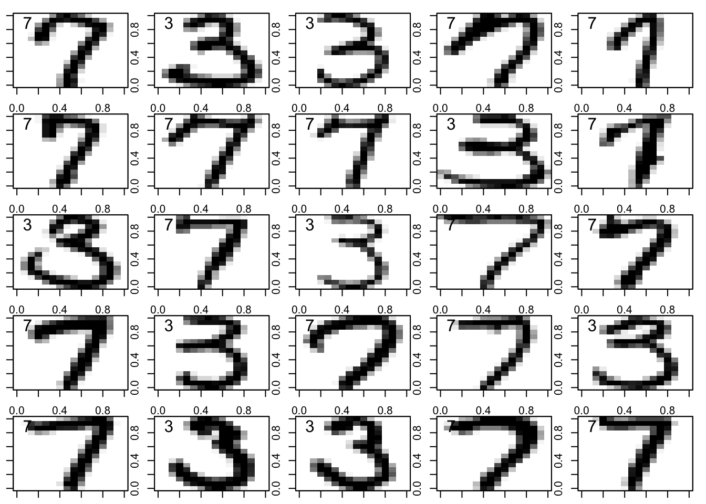

The US post office want to electronically scan hand-written numbers and be able to predict what was written for the ZIP code. A ZIP code tells them where a mail item needs to be delivered. We will look at the numbers 3 and 7 only — to see if we can distinguish these two numbers — to illustrate ideas about prediction based on logistic regression.
In this dataset, each hand-written digit is represented as a 16 x 16 array of pixels.
Each pixel is given a grey-scale value in the range [−1, 1] with -1 representing white and 1 representing black. There are thus 16 x 16 = 256 numbers representing a particular digit, which we can take as the values of 256 variables, v1, . . . , v256, say
Step 1: Reading in data
Code
# Note: -1 is white and 1 is black train.df <-read.table("data/binomial_image/train.txt")test.df <-read.table("data/binomial_image/test.txt")# Append D to the dataframenames(train.df) =c("D", paste("V", 1:256, sep=""))names(test.df) =c("D", paste("V", 1:256, sep =""))
Step 2: View the first 25 samples of handwritten 3s and 7s to identify which are the best at discriminating
Here, we can see cells that would be best at differentiating between a 3 and 7 are the cells that have most structural difference of white and black space i.e. protruding instances of black colour that are in areas unique to that number.
This can be seen in the following areas of each image:
Bottom Cells: It has a very pronounced black curve in the bottom right corner, which forms a loop. This is very contrasting to a 7, which remains open and essentially finishes being black at the bottom right.
Middle: The middle of this three is black and extends far from the right to the left of the cell, (almost like a straight line) providing more pronounced differentiation compared to a 7, which does not have this feature in this data set and instead has white area.
Top-left: The top of this cell is curved and filled in black, while a 7 in this data set typically has a distinct diagonal black line in the top-left corner.
Code
# Set up the plotting area to have a 5x5 grid and minimal marginspar(mfrow=c(5,5), mar =c(1,1,1,1))# Loop through the first 25 rows of the data framefor(k in1:25){# Convert the k-th row (excluding the first column) into a 16x16 matrix z =matrix(unlist(train.df[k,-1]), 16,16)# Initialize zz as a copy of z zz = z# Mirror the matrix horizontallyfor(j in16:1)zz[,j]=z[,17-j]# Plot the mirrored matrix as an image with grayscale colorsimage(zz, col =gray((32:0)/32))# Add a box around the plotbox()# Add the value of D in the top-left corner of the plottext(0.1,0.9,train.df$D[k], cex=1.5)}

Step 3: Computing the correlation
Here, we will compute the correlation between D and V1, V2,… V256, and identify which of these variables have the highest absolute correlations (i.e either very large and negative or very large and positive).
Code
# Correlation with D, without Dcrs=cor(train.df)[,"D"][-1]# Sort absolute values in in decending ordersort(abs(crs), decreasing=T)[1:20]
---title: "Binomial Image Recognition"author: "Brittany Alexandra"date: "`r Sys.Date()`"format: html: theme: cerulean toc: true toc-depth: 2 toc-location: left code-fold: true code-tools: trueeditor_options: markdown: wrap: 72---# IntroductionThe US post office want to electronically scan hand-written numbers andbe able to predict what was written for the ZIP code. A ZIP code tellsthem where a mail item needs to be delivered. We will look at thenumbers 3 and 7 only --- to see if we can distinguish these two numbers--- to illustrate ideas about prediction based on logistic regression.In this dataset, each hand-written digit is represented as a 16 x 16array of pixels.Each pixel is given a grey-scale value in the range \[−1, 1\] with -1representing white and 1 representing black. There are thus 16 x 16 =256 numbers representing a particular digit, which we can take as thevalues of 256 variables, v1, . . . , v256, say# Step 1: Reading in data```{r}# Note: -1 is white and 1 is black train.df <-read.table("data/binomial_image/train.txt")test.df <-read.table("data/binomial_image/test.txt")# Append D to the dataframenames(train.df) =c("D", paste("V", 1:256, sep=""))names(test.df) =c("D", paste("V", 1:256, sep =""))```# Step 2: View the first 25 samples of handwritten 3s and 7s to identify which are the best at discriminatingHere, we can see cells that would be best at differentiating between a 3and 7 are the cells that have most structural difference of white andblack space i.e. protruding instances of black colour that are in areasunique to that number.This can be seen in the following areas of each image:- Bottom Cells: It has a very pronounced black curve in the bottom right corner, which forms a loop. This is very contrasting to a 7, which remains open and essentially finishes being black at the bottom right.- Middle: The middle of this three is black and extends far from the right to the left of the cell, (almost like a straight line) providing more pronounced differentiation compared to a 7, which does not have this feature in this data set and instead has white area.- Top-left: The top of this cell is curved and filled in black, while a 7 in this data set typically has a distinct diagonal black line in the top-left corner.```{r}# Set up the plotting area to have a 5x5 grid and minimal marginspar(mfrow=c(5,5), mar =c(1,1,1,1))# Loop through the first 25 rows of the data framefor(k in1:25){# Convert the k-th row (excluding the first column) into a 16x16 matrix z =matrix(unlist(train.df[k,-1]), 16,16)# Initialize zz as a copy of z zz = z# Mirror the matrix horizontallyfor(j in16:1)zz[,j]=z[,17-j]# Plot the mirrored matrix as an image with grayscale colorsimage(zz, col =gray((32:0)/32))# Add a box around the plotbox()# Add the value of D in the top-left corner of the plottext(0.1,0.9,train.df$D[k], cex=1.5)}```# Step 3: Computing the correlationHere, we will compute the correlation between D and V1, V2,... V256, andidentify which of these variables have the highest absolute correlations(i.e either very large and negative or very large and positive).```{r}# Correlation with D, without Dcrs=cor(train.df)[,"D"][-1]# Sort absolute values in in decending ordersort(abs(crs), decreasing=T)[1:20]```